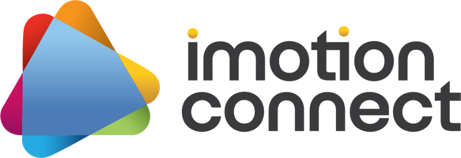
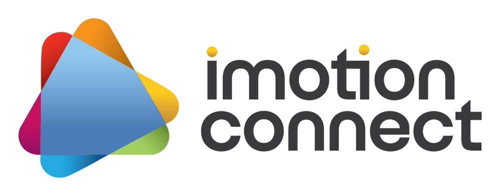
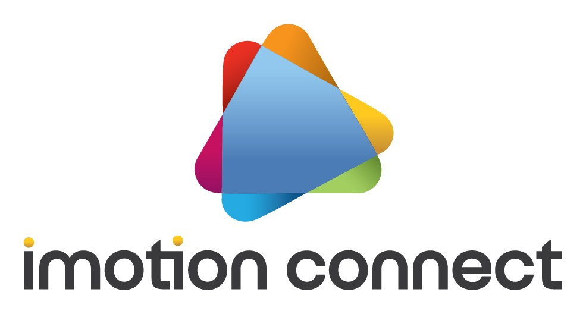
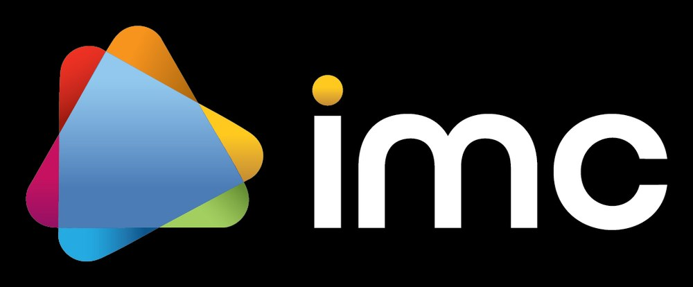
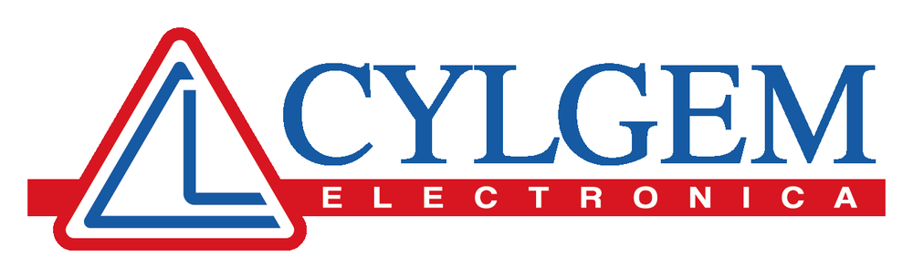
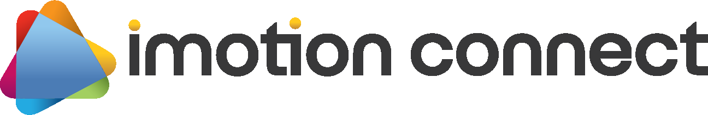
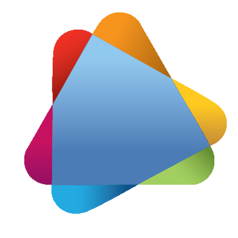
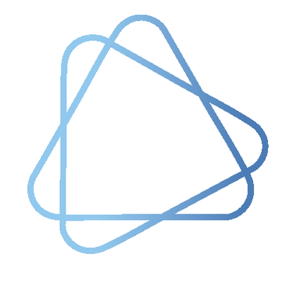
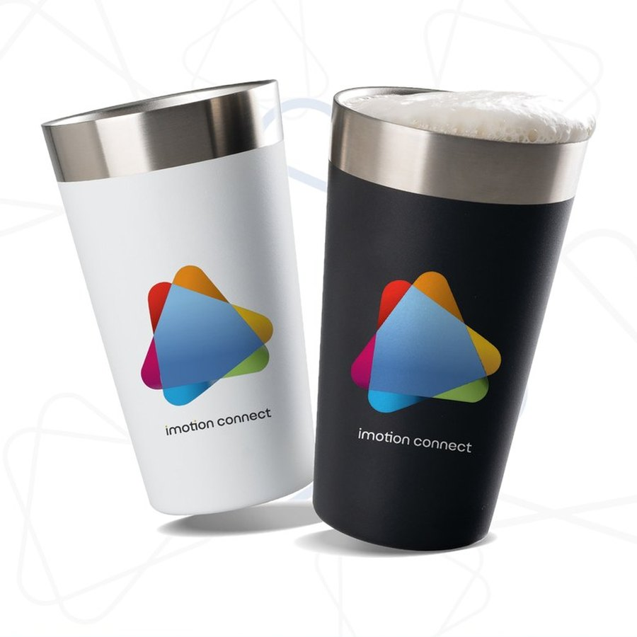
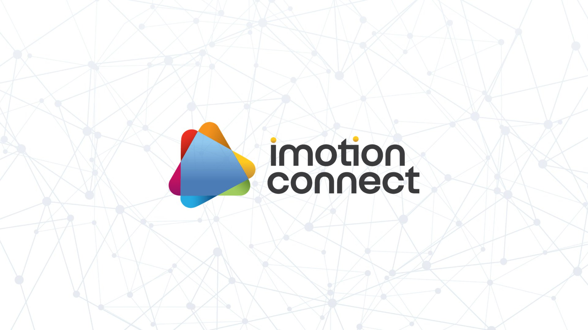

Brandbook
El objetivo de este manual es que todo lo que imotion connect diga, muestre y haga sea coherente con lo que promete, en cualquier medio y en cualquier contexto.
Es la referencia común para el equipo, los Partners Estratégicos y cualquier agencia que represente la marca. Y no es un manual de logo: es el manual de cómo una marca de servicio se ve, se escucha y se comporta.

Manifiesto
imotion connect
Sabemos lo que pasa en muchas casas conectadas. Una app o un control remoto para las luces, otro para el aire, otro para el portón. Un dispositivo que se compró por precio y que nadie configura cuando falla. Y un lunes a las 7, la escena de la mañana que deja de funcionar sin que nadie atienda del otro lado.
Creemos que eso no debería pasar. Creemos que la tecnología tiene que adaptarse a la manera de vivir de cada persona, y no al revés.
Por eso primero escuchamos. A qué hora se levanta, quién llega primero, qué parámetros de confort y funcionalidad espera, qué queda encendido cuando se va. De esa conversación salen las escenas, y de las escenas salen los dispositivos.
Por eso integramos con criterio. Lo que proponemos desde la integralidad de la domótica, la instalación certificada, nuestros estándares de calidad, lo que suman nuestros Partners Estratégicos y lo que producimos funciona como un solo sistema: una sola app, un solo responsable, una sola garantía.
Y por eso respondemos. Detrás de nuestra marca hay una empresa argentina con cuarenta años de electrónica para industrias donde un dispositivo que falla no es una molestia: es un retiro de producto. CYLGEM es nuestro aval en experiencia y tecnología internacional con fabricación nacional.
Mientras otras empresas muestran catálogo, nosotros creamos sistemas integrales y complementarios para controlar que todo funcione a la medida de cada cliente.
Tecnología que se adapta a tu manera de vivir.
Y alguien que responde por ella.
Cultura imotion connect
Un viaje en ascensor…
Lo que hacemos, contado en treinta segundos.
Qué somos y para quién
«Somos la marca de domótica de CYLGEM. Ayudamos a quien vive, opera o proyecta un espacio a que la tecnología se adapte a su manera de vivir, de recibir o de trabajar».
Qué hacemos y qué nos distingue
«Diagnosticamos antes de vender, integramos lo que el espacio necesita y respondemos por todo el sistema, con dos años de garantía y una fábrica argentina que valida cada dispositivo».
Porqué · Cómo · Qué
Creemos que la tecnología tiene que adaptarse a la manera de vivir de cada persona, y no al revés.
No habla de dispositivos, porque los dispositivos van a cambiar. La manera de vivir del otro, no.
Escuchamos antes de instalar, integramos con criterio y respondemos por cada espacio que conectamos.
Diagnóstico de necesidades, integración confiable y métricas observables, sobre la validación de CYLGEM.
Domótica para casas, comercios, hoteles y espacios de trabajo, por escenas y no por teclas.
Once verticales en esta primera etapa: del confort y el entretenimiento a los accesos, la videovigilancia, la seguridad técnica, el bienestar y el control por voz.
Propósito de la marca
En imotion connect creemos que la tecnología tiene que adaptarse a la manera de vivir de cada persona, y no al revés.
Por eso escuchamos antes de instalar, integramos con criterio y respondemos por cada espacio que conectamos.
Lo que lo sustenta
- El cliente no compra el control de dieciocho sistemas: compra una casa que se adapta a su manera de vivir.
- La frase recoge las palabras de Marcelo Caricato: coherencia, honestidad y el placer de habitar antes que el status de tener.
- Nuestra fortaleza no es tener todo: es poder responder por todo lo que conectamos. Y nuestra debilidad no es un error de gestión: es el precio de no haber resignado calidad.
Lo que el propósito nos obliga
Un propósito que no cambia decisiones es decoración. Este cambia tres:
- Qué entra al catálogo. Cada vertical nueva entra solo cuando podemos responder por ella con la misma garantía.
- Cómo vendemos. Primero el diagnóstico, después la propuesta. Nunca al revés.
- Cómo hablamos. De lo que pasa cuando tocás, no de la tecla. Comunicamos lo que generamos, no lo que hacemos.
Posicionamiento
Los otros venden dispositivos. Nosotros nos hacemos cargo de lo que pasa entre ellos.
El catálogo se compra. El criterio no.
El lugar que queremos ocupar
Para las personas que deciden sobre el espacio que habitan y están por cambiarlo —y para los arquitectos, interioristas, desarrolladores e instaladores que las acompañan—, imotion connect es la domótica que se hace cargo del sistema completo: diagnostica, integra y responde.
Porque detrás hay CYLGEM, una fábrica argentina que valida cada dispositivo con la exigencia de la industria automotriz.
El casillero vacío
El benchmark de más de cuarenta empresas de Argentina, Chile y Uruguay nos mostró que los que venden proyecto no fabrican, y los que fabrican no venden proyecto.
No vamos a ganar ese casillero por cantidad de producto. Lo vamos a ganar por la calidad de la respuesta.
La comparación que elegimos
Todo el sistema de marca empuja la conversación hacia la tercera frase. Una ventaja de catálogo se copia con una orden de compra. Una ventaja de servicio se construye con años de promesas cumplidas.
Es la forma en que cumplimos la misión que heredamos de CYLGEM: ofrecer siempre la mejor relación precio-calidad. Una relación que no se mide por tecla, sino por lo que el sistema resuelve y por cuánto tiempo funciona sin fallar.
A quién le hablamos
Una definición que incluye a todos no orienta a nadie. Ni a la pauta, ni al vendedor, ni al diseño del kit.
Tres mercados
Quien vive o administra un espacio, quien lo opera como negocio y quien lo proyecta, lo instala o lo recomienda.
De ahí salen dos líneas: una que vende directo al que habita u opera el espacio (B2C y B2B), y otra que construye alianzas para que otros nos recomienden, nos especifiquen o nos instalen (B2B2C).
La frase-madre, traducida
La frase habla de la casa. Cuando le hablamos a un hotel, a un restaurante o a un consultorio, la traducimos: un espacio que se adapta a su manera de recibir, de atender o de trabajar.
La promesa es la misma; cambia el espacio.
Los diez segmentos y dónde entramos primero
Las personas detrás de cada puerta
Cada segmento se traduce en una persona concreta, y cada persona compra algo distinto aunque le vendamos lo mismo. Tres puertas, tres carteles: el usuario final, la red de embajadores y la venta directa comparten marca, pero no comparten mensaje.
| A quién | Qué compra en realidad | Qué le decimos primero | Por dónde entra |
|---|
Los prescriptores
No siempre el que recomienda, especifica o integra es el que paga. Los prescriptores nos permiten entrar en la etapa de proyecto, cuando la tecnología todavía se incorpora sin romper nada.
En esta etapa nos concentramos en cuatro: arquitectos y estudios, interioristas, constructoras y desarrolladores, e instaladores eléctricos.
Partners Estratégicos
Sumamos Partners en cada etapa de la operación: producción, aplicación de dispositivos, instalación y postventa. Capacitados, certificados y respaldados por nosotros, son además las voces de la marca en la calle.
El Management de imotion connect controla toda la operación y los estándares de calidad de cada etapa. Una regla: la capacidad de la red de Partners marca el ritmo de la campaña.
A quién le decimos que no
Al que busca la tecla más barata para instalarla solo. Al que quiere domótica para mostrar. Y, por ahora, a los proyectos de inmótica industrial.
No es elitismo decir para quién no somos. Es coherencia decir para quién sí, y cumplirle.
Promesa de valor
Una promesa sin evidencia no es promesa: es deseo.
Por eso cada línea lleva al lado lo que la demuestra. Ninguna pieza de comunicación puede correr la promesa más allá de su evidencia.
| Prometemos | Lo demuestra |
|---|
Cómo se sostiene: tres pilares sobre una base
Diagnóstico de necesidades
Escuchamos antes de vender. Hay dos carriles: a medida dentro de un menú (dos o tres ambientes, relevamiento remoto por fotos, video y plano) y a medida de verdad (obra, comercio o desarrollo, con visita y proyecto propio).
Entregable: siempre un mapa de escenas, con su alcance escrito.
Integración confiable
Dispositivos de distinto origen que funcionan como un solo sistema. Cuatro condiciones: validación CYLGEM antes de entrar al catálogo, compatibilidad verificada en cada proyecto, un estándar de instalación propio que cumplen todos nuestros Partners y una garantía que cubre el sistema, no la pieza suelta.
Métricas observables
Lo que mejora, se ve. Confort, seguridad, ahorro y facilidad de uso, con indicadores que la plataforma pueda registrar.
Hablamos de horas evitadas, no de pesos ahorrados. Un número que no podemos demostrar no entra en ninguna pieza.
La oferta
La macrovertical 8 no es lo que vendemos: es lo que somos.
La domótica integra sistemas que pueden ser monitoreados, controlados, automatizados y coordinados entre sí. Las 18 verticales son el catálogo de funcionalidades; las 8 macroverticales, la arquitectura de la oferta; y las escenas integradas, el principal argumento de comunicación.
Inteligencia y automatización integral no es un producto que se agrega al carrito. Es lo que pasa entre los productos: el diagnóstico, la integración, las escenas, la respuesta. El mapa completo nos ubica en la categoría; lo que mostramos como disponible es exactamente lo que cumplimos.
El mapa de las 18 verticales
Filtrá por macrovertical o por etapa. El color de cada macrovertical sale del isotipo (ver 8 · Iconografía).
Las escenas: el lenguaje de la integración
No describimos dispositivos: describimos lo que pasa en el espacio cuando se ponen a trabajar juntos. Y solo mostramos escenas que podemos garantizar siempre, también el día en que algo falla.
En casa
En comercios, oficinas, gastronomía y hotelería
En un espacio que se opera como negocio, la escena también es gestión. Cada hora de luz y de climatización que evitamos en un ambiente vacío es ahorro para el cliente y menos impacto ambiental, el mismo compromiso con el medio ambiente que CYLGEM asume en toda su actividad. Ese ahorro se ve en las métricas, y cada acceso fuera de horario queda registrado y a la vista.
Los Partners suman capacidad. La responsabilidad sigue siendo nuestra.
Integral no es fabricar todo: es responder por todo.
Partners Estratégicos, con imotion connect como controller
No trabajamos solos, y no lo escondemos. En cada etapa sumamos Partners Estratégicos: los que producen o fabrican, los que conocen a fondo la aplicación de cada dispositivo, los que instalan y los que acompañan después. Lo que no delegamos es el control.
El Management de imotion connect es el controller de toda la operación: fija el estándar de calidad de cada etapa, certifica a cada Partner y responde ante el cliente por el sistema completo.
| Etapa | Qué suman los Partners Estratégicos | Qué controla el Management de imotion connect |
|---|---|---|
| 1 · Producción y fabricación | Producción propia en planta CYLGEM, empezando por iluminación y tomas; fabricantes asociados que completan verticales; producción con marca propia en China para ganar escala. | La especificación, la homologación y la validación CYLGEM de cada dispositivo antes de que entre al catálogo. |
| 2 · Aplicación e integración | Expertise en la aplicación de cada familia de dispositivos y en su integración con otros sistemas. | La compatibilidad verificada en cada proyecto y una sola app para todo el sistema. |
| 3 · Instalación | Equipos que instalan en territorio, con nuestro estándar. | El protocolo de instalación, la certificación de cada Partner y la puesta en marcha. |
| 4 · Funcionamiento y postventa | Soporte técnico en territorio, mantenimiento y evolución del sistema. | La atención técnica, la garantía de dos años sobre el sistema y las métricas de funcionamiento. |
Tres horizontes
El catálogo crece por etapas; la promesa, desde el primer día, es completa.
Es la visión de CYLGEM llevada a nuestra marca: una empresa en continuo crecimiento, perdurable en el tiempo.
- Hoy. Las once verticales de la primera etapa. Control y automatización.
- Ampliación. Seguridad y alarmas, energía, agua y riego. Automatización con medición.
- Integración plena. Piscinas y spas, y movilidad eléctrica. Inteligencia adaptativa.
El orden y el ritmo los fija la Dirección según el plan de inversión. La promesa no cambia de un horizonte a otro.
Voz, tono y lenguaje
Emocional en la forma, racional en el sustento.
Nunca un adjetivo donde puede ir una evidencia.
Voz
imotion connect habla como quien entiende de casas además de entender de tecnología. No explica el dispositivo: parte de la rutina de la persona que tiene enfrente.
Es la voz de alguien que va a estar del otro lado cuando algo falle. Honesta, cercana, sin elitismo.
Tono
- Cálido, sin exageración.
- Claro, sin tecnicismos.
- Seguro, porque cada afirmación tiene su respaldo.
- Sereno: quien ofrece tranquilidad no comunica con urgencia.
Lenguaje de escenas, no de dispositivos
NO: «Módulo dimmer Wi-Fi compatible con asistentes».
SÍ: «La luz que te despierta despacio».
NO: «Controlador de persianas motorizadas».
SÍ: «Las persianas se abren cuando arranca tu día».
NO: «Cerradura inteligente con app».
SÍ: «La puerta que se abre sin buscar la llave».
Persona verbal
Primera persona del plural en toda la comunicación institucional. Al usuario, voseo rioplatense: «tu casa», «cuando llegás». Y una precisión: no le hablamos «al hogar» ni «al usuario». Le hablamos a la persona que vive ahí.
Las reglas de oro
- Nunca prometemos lo que no podemos cumplir el peor día del año.
- Ningún número sin dueño. Si no lo podemos demostrar, no entra.
- Comparamos por ambiente resuelto y costo total. Nunca por tecla.
- Siempre a la vista: garantía, datos legales, quién instala, horario de soporte y respaldo de CYLGEM.
- Ninguna palabra que sirva para cualquiera. Si la frase la puede firmar otra marca de domótica, se reescribe.
Matriz editorial 70/20/10
70 · Categoría y valor. Escenas, usos, cómo se vive un espacio conectado.
20 · Humanidad. La fábrica, la gente, los cuarenta años de CYLGEM.
10 · Promoción. Con precio de referencia y garantía.
Cómo nos nombramos
imotion connect
Siempre en minúscula, en dos palabras, también al inicio de una oración. En texto corrido va siempre en negrita. En la primera mención, el nombre completo; después, «IMC» en documentos internos y comerciales.
«imoshion conéct»
La forma verbal está cerrada. Es la misma en ventas, instalación, atención, locución y video. El manual la fija para que nadie la invente.
by CYLGEM
La firma de respaldo. CYLGEM va siempre en mayúscula y no se traduce ni se abrevia.
Escritura correcta
imotion connect
IMC
imotion connect by CYLGEM
Escritura incorrecta
iMotion Connect
I-Motion · i-motion
Imotion Conect · emotion connect
Historia
imotion connect nace de una fábrica que hace cuarenta años que no puede fallar.
El origen
Detrás de nuestra marca está CYLGEM: cuarenta años fabricando electrónica en la Argentina, principalmente para la industria automotriz y de electrodomésticos, con laboratorio propio y normas ISO certificadas por TÜV.
Son industrias donde un dispositivo que falla no es una molestia: es un retiro de producto. Ese es nuestro respaldo técnico, y también nuestro validador.
La nueva etapa
imotion connect lleva esa exigencia a la casa, al comercio y al hotel. Con un catálogo que crece por etapas y una promesa que, desde el primer día, es completa.
Ningún competidor de nuestra capa en la Argentina tiene una fábrica así detrás. Por eso CYLGEM tiene que estar en la primera pantalla del sitio, en el packaging, en la firma de mail y en su propio LinkedIn.
Cuarenta años de electrónica argentina
La historia de CYLGEM es la que da inicio, respaldo y soporte a imotion connect. Cada hito es una exigencia que aprendimos a cumplir antes de llevarla a la casa, al comercio y al hotel.
Lo que heredamos de CYLGEM
La misión de CYLGEM es desarrollar, fabricar y comercializar productos de alta calidad, con la mejor relación precio-calidad. Sus valores no quedan en un cuadro en la pared: cada uno tiene su forma concreta en imotion connect.
| Valor de CYLGEM | Cómo se ve en imotion connect |
|---|---|
| Compromiso con nuestros clientes | Siempre hay alguien que responde: atención técnica con horario publicado y dos años de garantía sobre el sistema. |
| Respeto por nuestra gente | Capacitamos, certificamos y respaldamos a cada Partner Estratégico que lleva nuestra marca a la casa del cliente. |
| Cumplimiento de normas de calidad | La validación CYLGEM de cada dispositivo, venga de producción propia, de un Partner o de nuestra marca producida en China. |
| Innovación y mejora continua | Métricas observables de confort, seguridad, ahorro y facilidad de uso, para mejorar con evidencia y no con promesas. |
| Trabajo en equipo | El modelo de Partners Estratégicos, con el Management de imotion connect como controller de toda la operación. |
No cuántos dispositivos tenemos, sino cuántos espacios funcionan. No cuánto prometemos, sino cuánto cumplimos.
Guía de aplicación de la identidad visual
Cada punto de contacto con quien vive, opera o proyecta un espacio, y con cada Partner Estratégico, tiene que reflejar lo que sostiene a la marca: escucha, integración y respuesta. A continuación, las constantes de identidad visual de imotion connect.
Masterbrand


Aplicaciones alternativas del isologotipo

Arquitectura de marca
Si la fábrica es nuestro respaldo, tiene que verse.

imotion connect es la marca de cara al usuario. La firma «by CYLGEM» la acompaña en sitio, packaging, firma de mail y piezas institucionales; en redes y piezas chicas puede ir solo en el pie.
Sello de validación
40 años de electrónica argentina
Un sello para todo lo que integramos, venga de producción propia, de un Partner Estratégico o de nuestra marca producida en China. Es la evidencia visible de que todo pasó por el mismo estándar.
Proporciones y área de resguardo
Siempre debe presentarse en su forma original y no alterarse, expandirse ni distorsionarse cambiando las proporciones de ninguna manera.
El área coloreada, determinada por dos «o» del logotipo, es el espacio de resguardo que nunca debe ser invadido por otro objeto.
En el ancho, x equivale a dos «o» una al lado de la otra; en el alto, a dos «o» una sobre la otra. Se mide desde los extremos del símbolo a la izquierda, arriba y abajo, y desde el extremo de la «t» a la derecha.
Tamaños mínimos
El tamaño mínimo del isologotipo en una línea es de 10 mm de alto, medidos desde el extremo superior al inferior del símbolo.
Por debajo de esa medida el logotipo pierde lectura. Para usos menores, usamos la sigla imc o el isotipo solo.

Colores
El azul y el grafito sostienen la marca. El espectro es acento: vive en el isotipo, en la iconografía y en los códigos de macrovertical, nunca como fondo de grandes superficies.
Principales
Degradé de marca: azul #4B7CB6 a celeste #91C7ED, de izquierda a derecha.
Secundarios
Tipografía: Open Sans
Open Sans es una fuente de Google con una familia amplia y muy legible en pantalla y en papel. La usamos en todos los textos. El logotipo es un dibujo y no se compone con ella.
ABCDEFGHIJKLMNÑOPQRSTUVWXYZ
abcdefghijklmnñopqrstuvwxyz
0123456789 @ % $ / ( ) ¿?
Iconografía
Los ocho colores del isotipo son las ocho macroverticales.
El triángulo azul central, el que cubre a todos, es la macrovertical 8: inteligencia y automatización integral. Lo que pasa entre los productos.
Línea continua, trazo redondeado y esquinas suaves, en sintonía con la versión de línea del isotipo. Las verticales de la primera etapa van a color pleno; las de próximas etapas, atenuadas. Los íconos de esta página son una guía: la versión final se dibuja en vector.
Aplicaciones de marca
La marca no vive en el manual: vive en la calle, en la obra y en la mano del cliente.
Indumentaria del equipo y de los Partners Estratégicos, merchandising y flota. Sobre superficies claras va el isologotipo a color; sobre superficies oscuras, la sigla imc con el isotipo a color; sobre el azul y el celeste de marca, el símbolo de línea en blanco.
Vistas ilustrativas de aplicación. Cada pieza de producción se valida con su proveedor.

Aplicación del símbolo en los perfiles de Redes Sociales
En redes, el perfil es un círculo. Ahí el símbolo habla solo.
En la foto de perfil usamos el símbolo sin el logotipo, centrado y contenido dentro del perímetro circular que define cada red. El nombre imotion connect ya aparece junto al perfil, así que no hace falta repetirlo.
La versión principal es el símbolo a color sobre blanco. La alternativa, el símbolo de línea en el degradé de azules, también sobre blanco.


Así se ve en un posteo
Tu casa no necesita más dispositivos. Necesita que funcionen juntos.
En imotion connect escuchamos antes de instalar, integramos con criterio y respondemos por todo el sistema. Con el respaldo de CYLGEM y cuarenta años de electrónica argentina.
Tecnología que se adapta
a tu manera de vivir.

imotion.connect Lo que queda encendido cuando salís también es una decisión. Con imotion connect, la escena «Salir de casa» apaga, cierra y verifica por vos.
Simulaciones ilustrativas de aplicación. Los textos de los posteos son de ejemplo.
Backgrounds
Un fondo propio hace que la marca se reconozca antes de leerla.
Tres fondos para presentaciones, pantallas, videollamadas y piezas digitales. Sobre los fondos claros va la masterbrand; sobre el fondo negro, la sigla imc con el isotipo a color.


